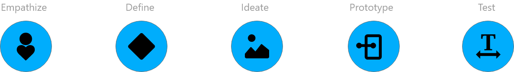
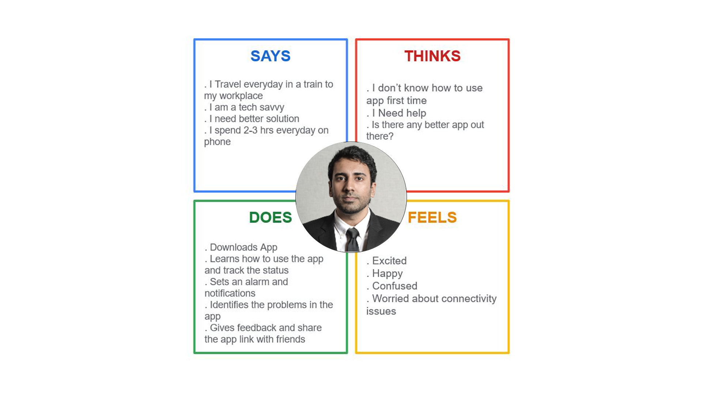
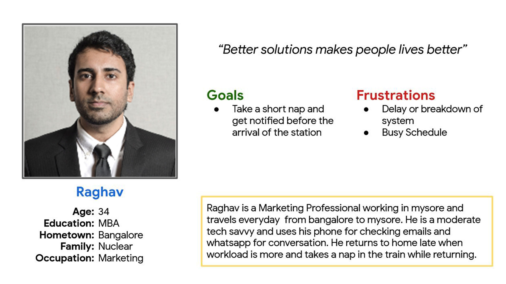
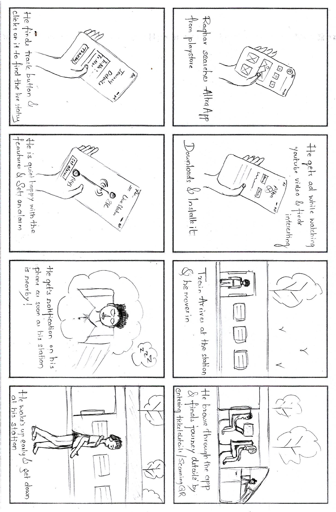
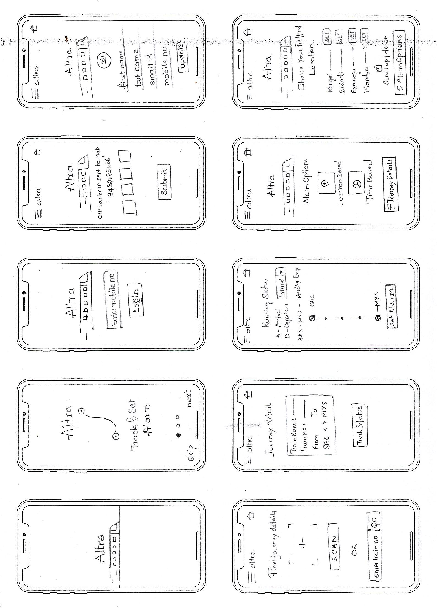

Introduction
People around the world travels from home to office, to clients location and school, colleges, thier business place by train. People often find it difficult to take a short nap on the train due to chances of missing thier station.
How might we help these people to get down before the arrival of thier station?
Goal
Create a minium viable product to help the user to take a nap!
Roles & Responsibilities
- My Role : UI/UX Designer
- Timeline : 4 Weeks
- Scope : Ux/UI
- Responsibilities : Research, Wireframing, Prototyping
- Software : Figma, Photoshop, Figma-Mirror
- Constraints : Team & Budget
Process
I used the Design Thinking framework to design my concept.

Discovery
The first step was to empathize with the user to better understand the problem space.
To empathize , we need to find out who is the end user?
For this case the end users are “PASSENGERS”. Passengers are large group of people. But, I have chosen the user as one who commutes from point A to Point B for thier daily task / work.
After Primary and Secondary research, I was able to identify the pain points and needs of the user. This gave me an idea to draw empathy map and Persona of the user.
Define
The next step was to define the problem. In order to do this, I first needed to understand the main problem areas by synthesizing the research
Empathize
I am able to create the empathy map and persona based on the research insights and assumptions

Persona
I Identified the persona that represents the user who would be using the solution

Problem Statement
- From the research synthesis, I was able to come up with specific problem statement
- I am a Marketing Professional
- I am Trying to take a short nap on the train
- But i can’t because
- i am worried about missing my station
Possible Solution
- Using existed data/api from the railway department
- Enabling auto trigger for alarm based on the running status of train, such as location tracking
- Sending notification before the arrival of the station
- Notification about maintainance, breakdown or delay
- Giving option to choose alert mode
Information Architecture
This is the important task of establishing the blue print of the product. Created Sitemap and User flow to proceed with the design phase
Ideate
Once the information architecture in place, I started brainstorming the ideas by creating the storyboard and crazy 8'S Sketch

Skecthing
Story board has gave me a good start to sketch design of an app screens and helps in visualising the MVP and to design low-fi prototypes further. I came up with several potential solution and made some rough sketches

Low fidelity wireframes
After having rough sketch in my hand I decide to go and create the Low-fidelity wireframes for the same as it does not involve too much of detailing like visual aesthetics, color, images and typography and ii is just a skeleton of the app and will be helpful to validate the design
Design System
The next important step was to focus on the visual design elements and create a brand identity for the product
High fidelity wireframes
Incorporating the visual elements in the high fidelity wireframe to make design ready to prototype and test

Interactive Prototype
Conclusion
As this is the first ever project tried myself to understand the process. It is a fun, good learning of new tools and techniques. However i am not able to conduct user testing due to some constraints, i just sent out the interactive prototypes to users in my friend group and got positive feedback on it. Below you can find the short video of interactive prototype.